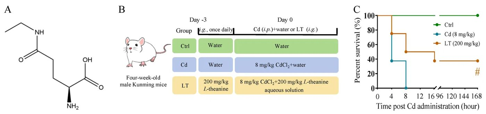
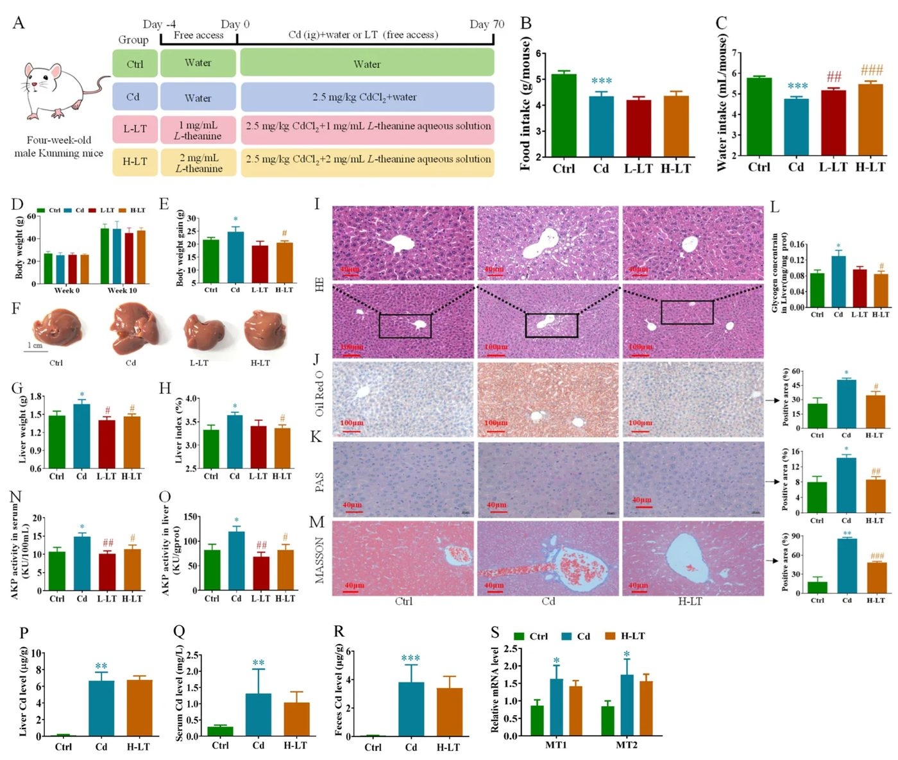
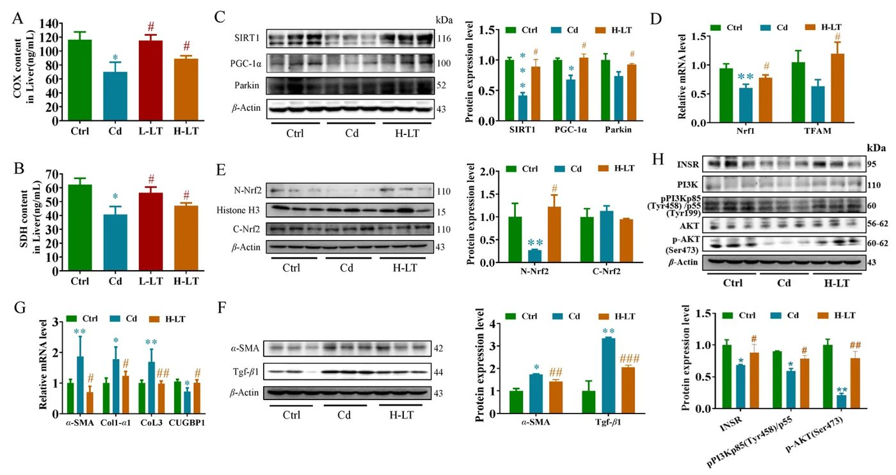
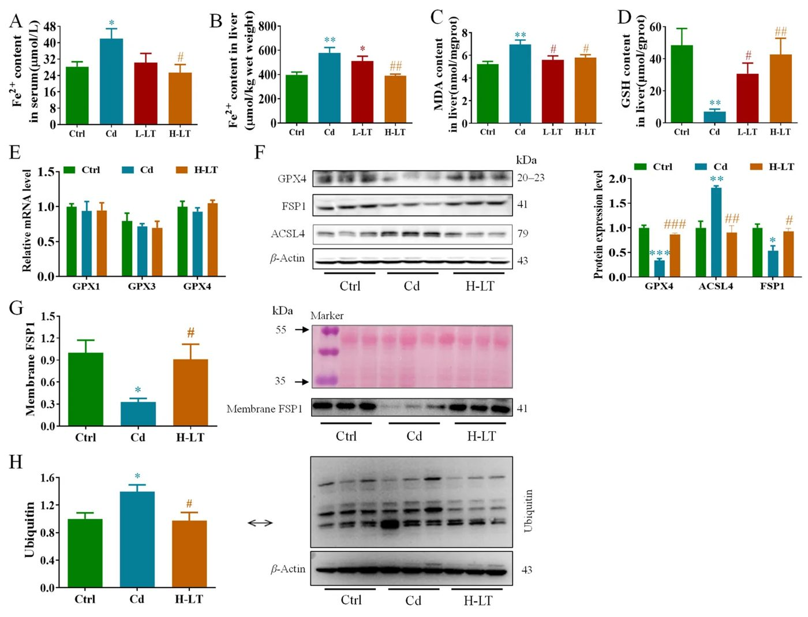
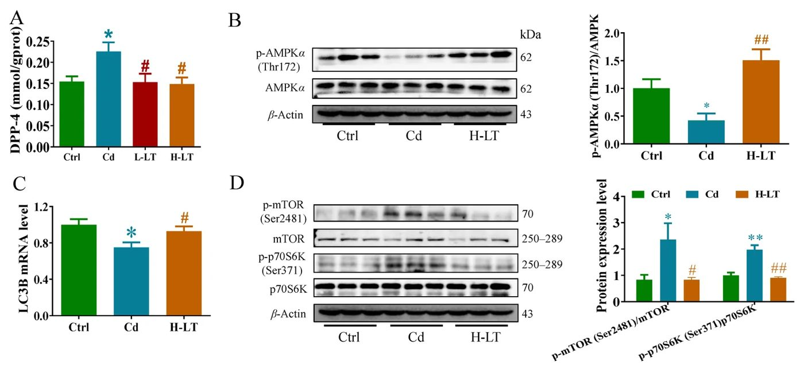
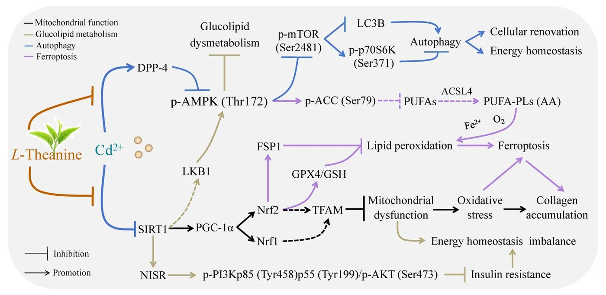

L-теанин против токсинов: как чай помогает печени справляться с тяжелыми металлами


Кадмий — токсичный металл, который накапливается в организме и нарушает работу печени, блокируя процессы клеточного очищения. Исследование на мышах показало, что L-теанин, содержащийся в чайных листьях, помогает восстановить эти процессы. Добавка активирует защитные механизмы, снижая уровень окислительного стресса и улучшая обмен веществ в печени.
Главное
- L-теанин активирует AMPK, восстанавливая аутофагию и энергетический обмен в клетках печени.
- Добавка снижает активность DPP-4 и повышает уровень SIRT1, защищая митохондрии от дисфункции.
- Прием L-теанина блокирует ферроптоз и накопление липидов, вызванные воздействием кадмия.
Подробнее
Кадмий (Cd) провоцирует сбои в аутофагии — системе клеточной «уборки», что ведет к накоплению поврежденных митохондрий и развитию ферроптоза (гибели клеток из-за избытка железа). В эксперименте при острой интоксикации 8 мг/кг хлорида кадмия (CdCl2) смертность достигала 100% за 8 часов. Предварительный прием L-теанина в дозировке 200 мг/кг увеличил медианное время выживания с 4 до 16 часов и снизил смертность до 60%.
При хроническом воздействии кадмия L-теанин активирует сигнальный путь AMPK/mTOR, подавляя активность фермента DPP-4 и повышая уровень белка SIRT1. Это восстанавливает энергетический баланс: снижается накопление гликогена и липидов в печени, а также нормализуется работа митохондрий за счет активации пути PGC-1α/Nrfs/TFAM. В результате L-теанин блокирует деградацию GPX4, ключевого фермента, предотвращающего гибель клеток при окислительном стрессе.
Ограничения
Исследование проводилось на мышах, поэтому прямая экстраполяция дозировок на людей требует осторожности. Работа не учитывает долгосрочные эффекты накопления L-теанина в организме человека.
Полный перевод статьи
Резюме
В настоящее время от 14 до 17% пахотных земель в мире загрязнены как минимум одним токсичным металлом, включая кадмий (Cd), мышьяк, кобальт, хром, медь, никель и свинец. Это создает риски для здоровья и экологии для 0,9–1,4 млрд человек. Кадмий является наиболее распространенным загрязнителем сельскохозяйственных почв (9,0%). Биологический период полувыведения Cd у человека составляет 20–40 лет. Даже при низких дозах Cd ассоциирован с заболеваниями печени, сердечно-сосудистой системы, диабетом, остеопорозом и нейродегенерацией. Высокое воздействие Cd повышает смертность примерно на 17%. Около 90% воздействия Cd приходится на пищевые продукты (среднемировое потребление ~2,20 мкг/кг массы тела в день), курение добавляет 2–4 мкг в день. Профессиональное воздействие затрагивает 207 350 рабочих в ЕС и 525 000 в США.
Важно
Кадмий накапливается в организме десятилетиями, а 90% его поступления связано с рационом, что делает печень ключевой мишенью для токсического воздействия.
Токсичность Cd проявляется через митохондриальную дисфункцию, эндокринные нарушения, стресс эндоплазматического ретикулума, окислительный стресс и воспаление. Аутофагия — процесс переработки клеточных компонентов — играет двойную роль: выживание при умеренном стрессе или гибель клетки при превышении порогов безопасности. Нарушение аутофагии лежит в основе цитотоксичности Cd. Существующие хелаторы (димеркаптоянтарная кислота и др.) эффективны при остром отравлении, но обладают высокой токсичностью и вызывают потерю жизненно важных микроэлементов (K⁺, Ca²⁺, Mg⁺). Эффективные методы борьбы с хронической интоксикацией Cd отсутствуют.
Пояснение
Аутофагия — это «самоочищение» клетки, при котором она перерабатывает поврежденные структуры для получения энергии и строительных материалов.
L-теанин (LT) — аминокислота из чая (Camellia sinensis L.) — обладает антиоксидантными и нейропротекторными свойствами. Исследования на мышах показали, что LT защищает от нейротоксичности и апоптоза клеток PC12, вызванных Cd. LT признан безопасным (GRAS) Управлением по санитарному надзору за качеством пищевых продуктов и медикаментов США (FDA), рекомендуемая норма — до 1200 мг/день. В данной работе проверялась гипотеза, что LT может поддерживать аутофагию в печени и противодействовать эффектам Cd у мышей.
Исследование проведено на 3-недельных самцах мышей линии Куньмин (Kunming). Протоколы одобрены Комитетом по этике лабораторных животных (номер LLSC410240005). В эксперименте по острой смертности мыши получали CdCl₂ (8 мг/кг, внутрибрюшинно) после 3-дневного введения LT (200 мг/кг, перорально). В хроническом эксперименте мыши получали CdCl₂ (2,5 мг/кг, перорально) в течение 10 недель, LT вводился с питьевой водой (1 или 2 мг/мл).
Осторожно
Исследование выполнено на мышах; результаты требуют подтверждения в клинических испытаниях на людях или на моделях органоидов печени.
LT снизил смертность мышей при остром воздействии Cd с 100% до 60% и увеличил медиану выживаемости с 4 до 16 часов. При хроническом воздействии Cd вызывал гипертрофию печени, жировую инфильтрацию и фиброз. LT эффективно предотвращал эти повреждения. Механизм действия LT связан с регуляцией пути SIRT1/PGC-1α, восстановлением функции митохондрий и блокированием ферроптоза (железозависимой гибели клеток) через активацию пути AMPK/mTOR.
LT не влияет на накопление Cd в тканях, что отличает его от хелаторов. Его защитный эффект основан на коррекции метаболических нарушений и восстановлении аутофагии. Ограничением является то, что текущие данные не позволяют однозначно разделить активацию формирования аутофагосом и нарушение их деградации. Требуются дальнейшие исследования на уровне белков и потока аутофагии.


Полное описание рисунка
Влияние LT на массу тела, гистологию и функцию печени у мышей при субхроническом воздействии Cd. (A) Схематическая диаграмма эксперимента на животных. (B, C) Потребление пищи и жидкости. (D, E) Масса тела и прирост массы тела. (F) Морфология печени. (G) Масса печени. (H) Индекс печени. (I–K) Окрашивание H&E, Oil Red O и по Массону. (L, M) Уровни гликогена и окрашивание PAS. (N, O) Уровни активности АКФ в сыворотке и печени соответственно. (P–R) Уровни Cd в печени, сыворотке и фекалиях соответственно. (S) Относительные уровни экспрессии мРНК MT1 и MT2. Данные представлены как среднее ± стандартная ошибка среднего (n = 9). * p < 0,05, p < 0,01 и * p < 0,001 по сравнению с контрольной группой. # p < 0,05, ## p < 0,01 и ### p < 0,001 по сравнению с группой Cd.


Полное описание рисунка
Влияние LT на функцию митохондрий, сигнальный путь SIRT1/PGC-1α и его нисходящие мишени в печени мышей при субхроническом воздействии Cd. (A, B) Уровни COX и SDH (n = 9). (C) Белки, связанные с сигнальным путем SIRT1/PGC-1α (n = 3). (D) Относительные уровни экспрессии мРНК TFAM и NRF1 (n = 9). (E) Экспрессия белка Nrf2. (F, G) Белки и гены, связанные с фиброзом. (H) Белки сигнального пути инсулина (n = 3). Данные представлены как среднее ± стандартная ошибка среднего.


Полное описание рисунка
Влияние LT на ферроптоз в печени мышей при субхроническом воздействии Cd. (A, B) Уровни Fe2+ в сыворотке и печени. (C, D) Уровни MDA и GSH. (E) Относительные уровни мРНК GPX1, GPX3 и GPX4 (n = 9). (F) Экспрессия белков GPX4, FSP1 и ACSL4. (G) Экспрессия мембранного белка FSP1. (H) Экспрессия белка убиквитина (n = 3). Данные представлены как среднее ± стандартная ошибка среднего. * p < 0,05, p < 0,01 и * p < 0,001 по сравнению с контрольной группой. # p < 0,05, ## p < 0,01 и ### p < 0,001 по сравнению с группой Cd.


Полное описание рисунка
Влияние LT на сигнальный путь аутофагии, опосредованный AMPK/mTOR, и гены и белки метаболизма глюкозы и липидов, регулируемые AMPK, в печени мышей при субхроническом воздействии Cd. (A) Уровень DPP-4 (n = 9). (B) Экспрессия белка p-AMPK (Thr172) (n = 3). (C) Относительные уровни мРНК LC3B (n = 9). (D) Экспрессия белков p-mTOR (Ser2481) и p-p70S6K (Ser371) (n = 3). (E, F) Гены (n = 9) и белки (n = 3), связанные с синтезом жирных кислот. (G, H) Гены (n = 9) и белки (n = 3), связанные с окислением жирных кислот. (I) Относительные уровни мРНК генов глюконеогенеза TXNIP и Trx1 (n = 9). (J, K) Экспрессия транспортера глюкозы GLUT2 и мембранного GLUT2 (n = 3). Данные представлены как среднее ± стандартная ошибка среднего. * p < 0,05, p < 0,01 и * p < 0,001 по сравнению с контрольной группой. # p < 0,05 и ## p < 0,01 по сравнению с группой Cd.


Схема исследования
Статья опубликована в рецензируемом журнале Nutrients. Но и опубликованный результат — одно исследование, а не окончательный вывод.
Источник
| Источник | Категория | Лицензия |
|---|---|---|
| Nutrients (Europe PMC) | other | CC BY 4.0 |
Источники
| Источник | Ссылка |
|---|---|
| Страница статьи | europepmc.org |
| Полный текст (PDF) | europepmc.org |
| DOI | doi.org |
| Метаданные Crossref | api.crossref.org |
| Europe PMC | europepmc.org |
| Иллюстрация | commons.wikimedia.org |